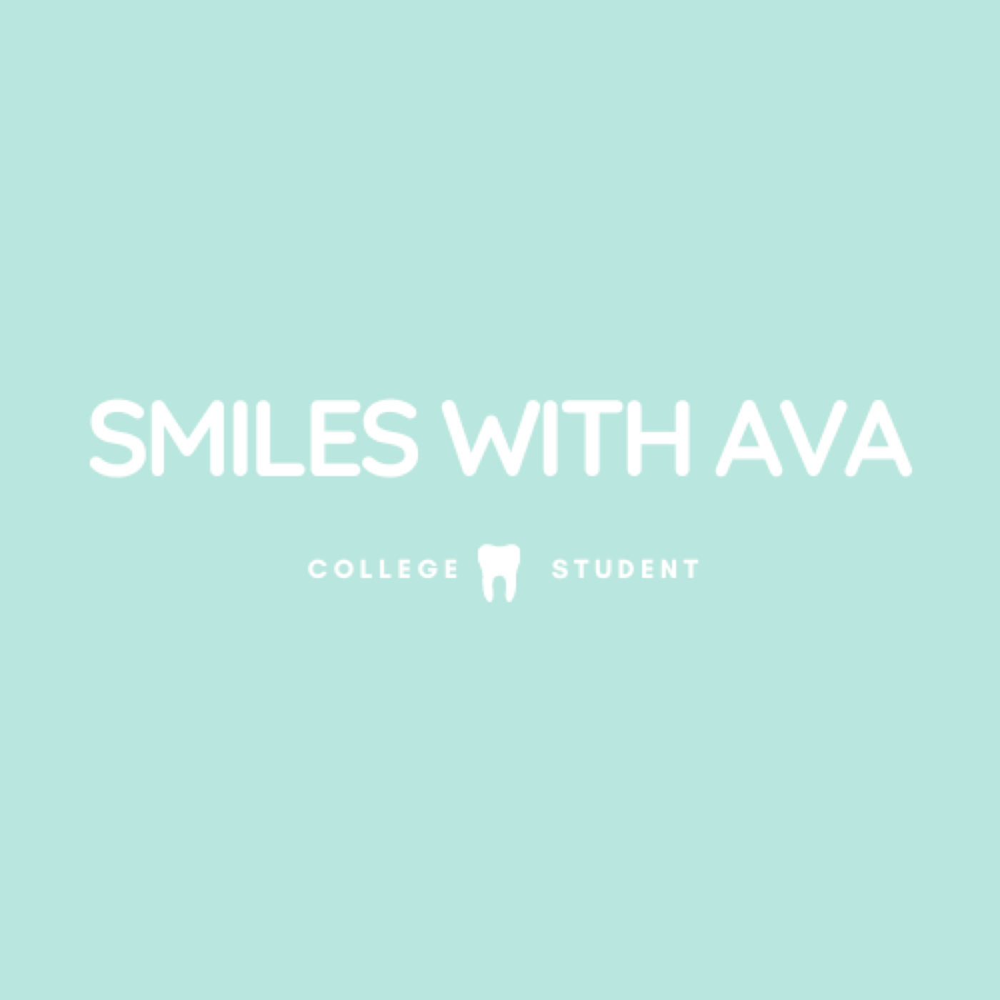
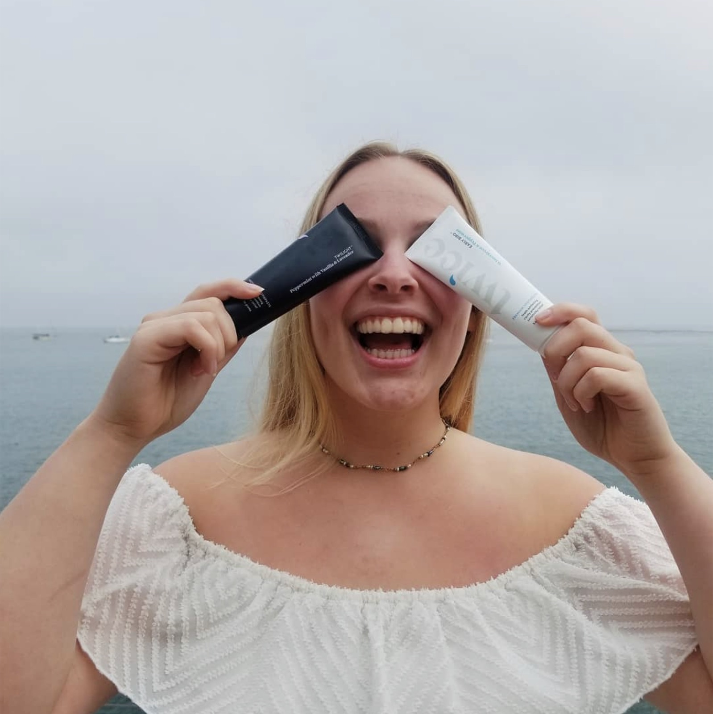
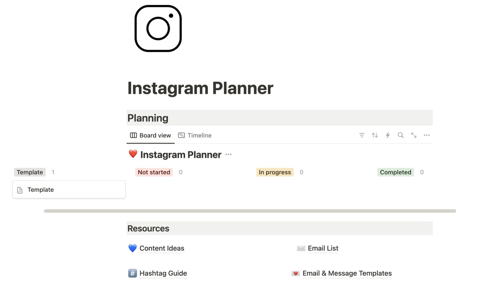
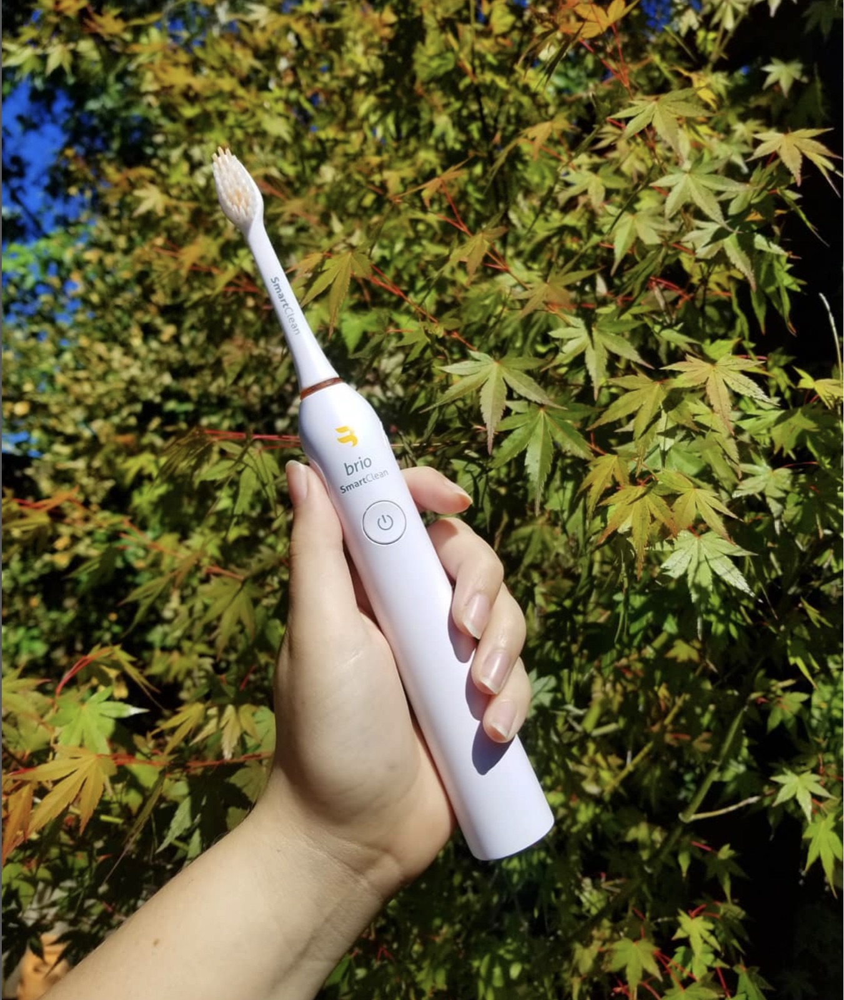
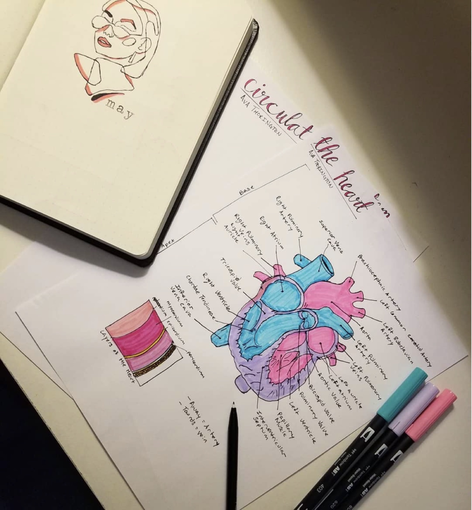

Case Study 05
@Smiles.With.Ava
A fun project to connect with fellow students and dental professionals on Instagram.

Backstory
From study account to global community
I initially created the account to connect with and follow individuals in college and the dental industry. Within the first few months of having my student Instagram account, I began to grow a following and connect with people from all over the world.
I started showcasing the study tools, organizational methods, and dental products I was using, which further fueled the account’s growth and engagement.

Tools
- Notion
- Canva
- Instagram Business Analytics
- Unfold
- Snapseed
- Linktree
- Milkshake
Companies I worked with
- Twice
- Triple Bristle
- Toothlife
- HygieneDr
- Brio
The process
Plan content
- Generate ideas and use my Notion template to organize them, track the progress of creating and posting, and organize extra information shared alongside the photo or video
Shoot content
Edit content with appropriate tools
Determine caption, hashtags, alt text, and accounts to tag when posting
Time the post
- Check analytics for when most of my following was active and post feed posts 10–15 minutes before that time
- Story posts were more common and less calculated with timing



Reflection
I created this account before I began focusing on business classes and gaining deeper insights into social media marketing. However, managing this dental study Instagram account taught me several valuable lessons.
First, consistency is key. The most significant growth in my account occurred when I was consistently active, posting regularly on my main feed and stories. I also consistently interacted with other accounts on Instagram, which helped me build relationships and increase my visibility in the community, particularly through comments on others’ posts.
Maintaining a consistent brand image while adding a personal touch is essential for building a loyal following. If I could go back, I would have expanded my content to include more diverse topics beyond my school experience and the products I was using. This broader focus would have allowed me to post more frequently and create a more comprehensive brand image. To foster more meaningful connections, I should have shared more of my personality with my audience.
Even though I only used Instagram, I made the most of the platform by using every available content format, including IGTV, Reels, Stories, and feed posts. However, to further extend my reach, I would have used multiple platforms instead of relying solely on Instagram.
If I were to work on the @Smiles.With.Ava account today, I would incorporate more advanced analytics tools beyond what Instagram provides and the ones I created in Notion. There are now more tools available that I’m aware of, which I would use to plan content and analyze performance more effectively.
I’m grateful for the hands-on experience I gained by diving into social media marketing and later enhancing my knowledge through my coursework at CSUMB.